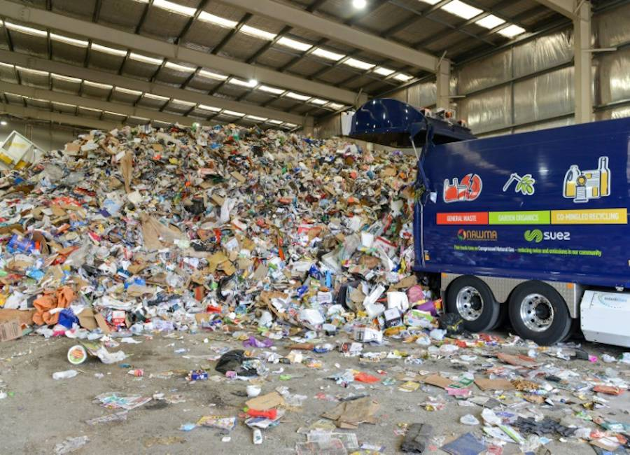

1er Paso
El primer y ultimo paso para poder reciclar el vidrio es cuando personas como tu y yo limpiamos nuestros envaces de vidrio y los llevamos a un contenedor especial para su reciclaje

-
2do Paso
Cuando los botes de reciclaje de vidrio se llenan, pasan camiones que transportan todo ese vidrio a una planta de tratamiento, al salir de ahí el vidrio ya esta separado por colores y limpo para su nuevo uso con cualquier objetivo
 -
3er Paso
El vidrio, ya transformado a materia prima, es transportado a fabricas para que se vuelva a fundir y se vuelva a usar

-
4to Paso
La proxima parada de los envaces de vidrio, es devuelta a estar a la venta, donde nuevamente estarán disponibles para que los consumidores en general los compren o que lo haga otra empresa

-
5to Paso
Como lo dijimos al inicio, la primera y ultima parada del vidrio, es cuando volvemos a dejar nuestros envaces en un bote de reciclaje